長期トレンド
JKMとJEPXシステムプライスの推移グラフ
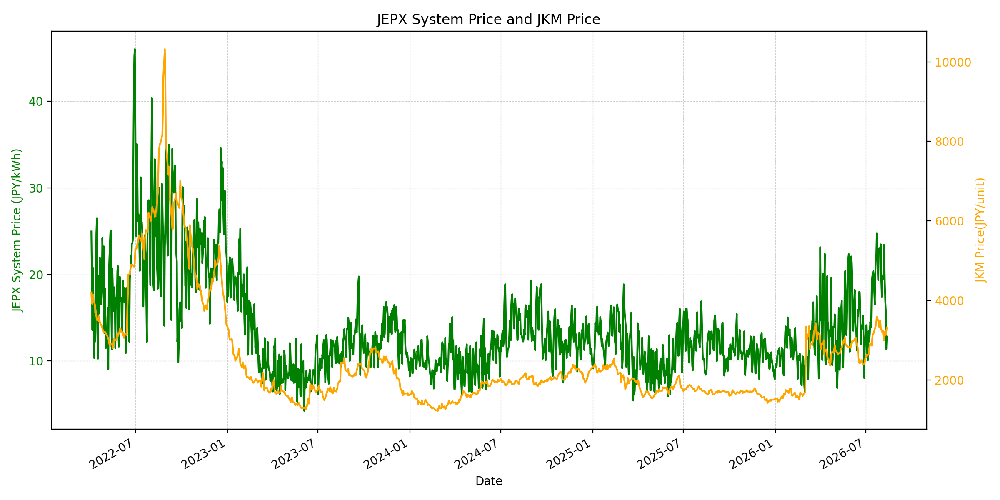
WTIの推移グラフ
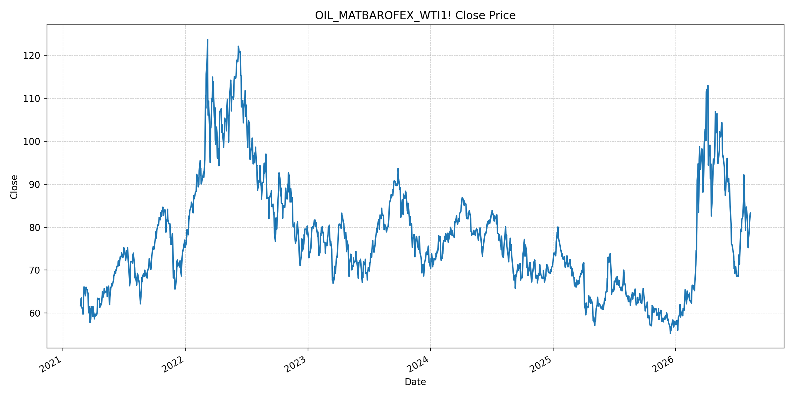
JEPXエリアプライスグラフ（直近一年分）
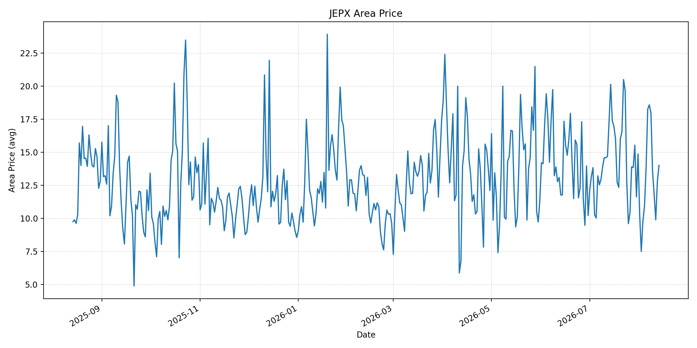
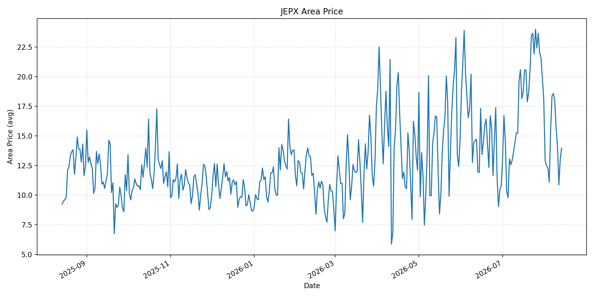
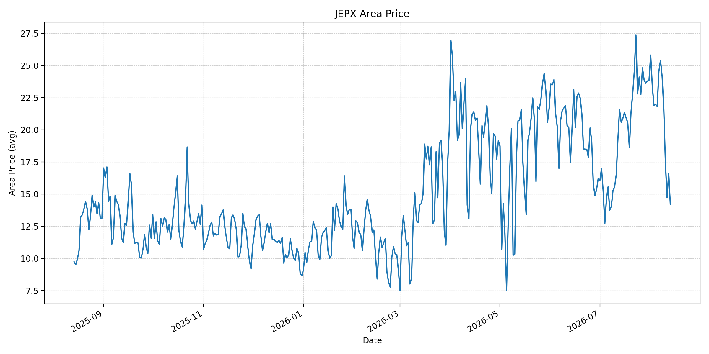
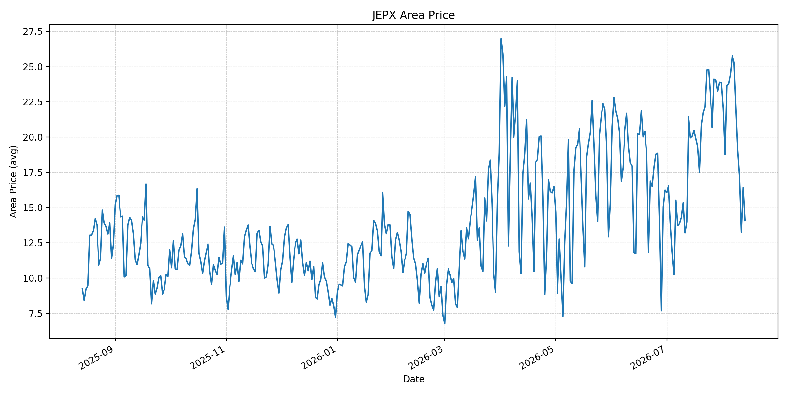
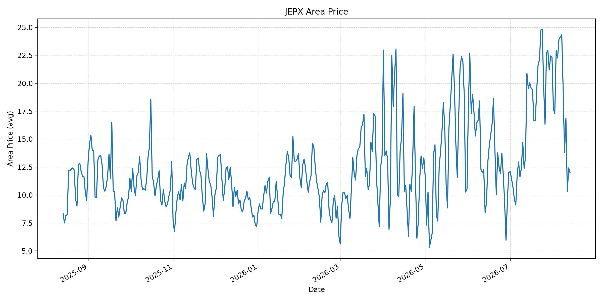
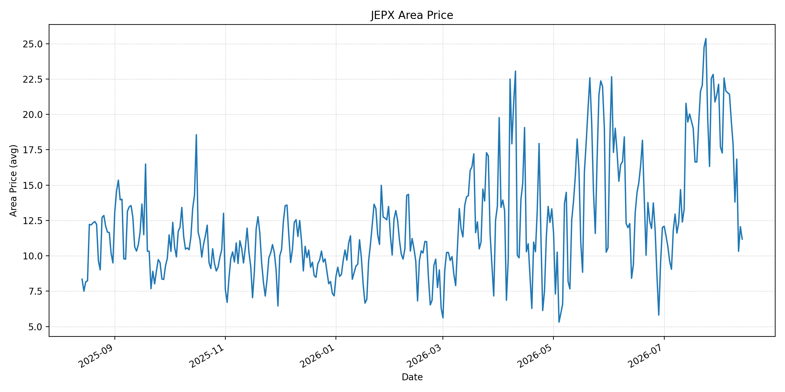
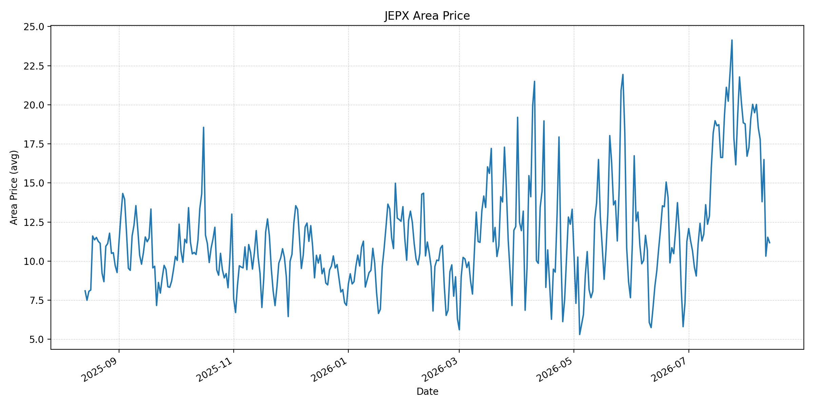
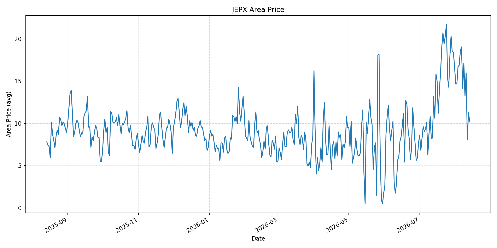
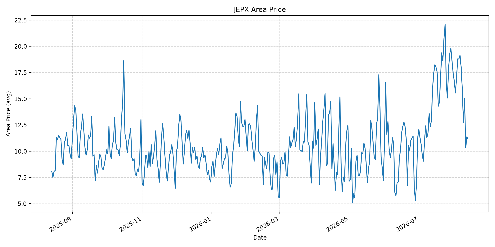
短期トレンド
JKMとJEPXシステムプライスの推移グラフ
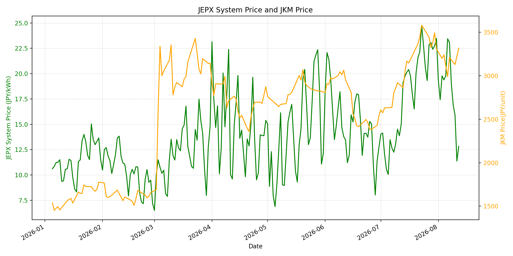
WTIの推移グラフ
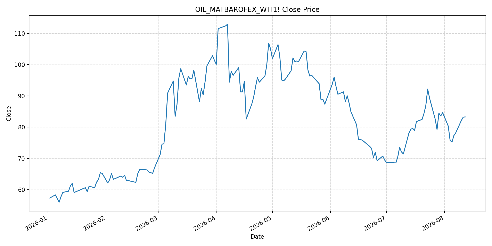
JEPXシステムプライス
JEPXは受渡日ベースの最新非空値で評価しています。最新値は 2026-08-13 分です。先週終値は 2026-08-06 時点の直近値、先月終値は 2026-07-31 時点の直近値で評価しています。
| エリア | 当日価格 | 前日価格 | 前日比（％） | 先週終値 | 先週比（％） | 先月終値 | 先月比（％） | 過去最高値 | 最高値比（％） |
|---|---|---|---|---|---|---|---|---|---|
| システム | 12.87 | 12.82 | 0.39 | 23.44 | -45.09 | 23.48 | -45.19 | 64.06 | -79.91 |
| 北海道 | 14.00 | 12.79 | 9.46 | 18.25 | -23.29 | 14.86 | -5.79 | 73.92 | -81.06 |
| 東北 | 13.97 | 13.01 | 7.38 | 18.38 | -23.99 | 18.04 | -22.56 | 84.92 | -83.55 |
| 東京 | 14.19 | 16.62 | -14.62 | 24.54 | -42.18 | 23.85 | -40.50 | 86.13 | -83.52 |
| 中部 | 14.07 | 16.41 | -14.26 | 25.76 | -45.38 | 23.83 | -40.96 | 52.06 | -72.97 |
| 北陸 | 11.97 | 12.42 | -3.62 | 24.15 | -50.43 | 22.32 | -46.37 | 46.48 | -74.25 |
| 関西 | 11.18 | 12.06 | -7.30 | 21.42 | -47.81 | 22.13 | -49.48 | 46.48 | -75.95 |
| 中国 | 11.18 | 11.53 | -3.04 | 20.02 | -44.16 | 18.78 | -40.47 | 46.48 | -75.95 |
| 四国 | 10.21 | 11.31 | -9.73 | 19.04 | -46.38 | 16.74 | -39.01 | 46.48 | -78.04 |
| 九州 | 11.17 | 11.37 | -1.76 | 19.15 | -41.67 | 17.46 | -36.03 | 40.54 | -72.45 |
LNG先物価格
最新値は 2026-08-12 の LNG(close) です。前日価格は直近非空値の 2026-08-10、先週終値は 2026-08-05、先月終値は 2026-07-31 時点の直近値で評価しています。
| 当日価格 | 前日価格 | 前日比（％） | 先週終値 | 先週比（％） | 先月終値 | 先月比（％） | 過去最高値 | 最高値比（％） |
|---|---|---|---|---|---|---|---|---|
| 3318.00 | 3129.00 | 6.04 | 3116.00 | 6.48 | 3307.00 | 0.33 | 10319.00 | -67.85 |
石油先物価格
最新値は 2026-08-12 の OIL(close) です。前日価格は 2026-08-11、先週終値は 2026-08-05、先月終値は 2026-07-31 時点の直近値で評価しています。
| 当日価格 | 前日価格 | 前日比（％） | 先週終値 | 先週比（％） | 先月終値 | 先月比（％） | 過去最高値 | 最高値比（％） |
|---|---|---|---|---|---|---|---|---|
| 83.27 | 83.20 | 0.08 | 75.22 | 10.70 | 84.67 | -1.65 | 123.70 | -32.68 |
ニュース
イラン情勢に関するニュース
- 8月12日、米国はイラン港湾の封鎖を通じてホルムズ海峡を「完全に管理している」と主張しました。一方、イランは封鎖解除などの要求が満たされるまで海峡を再開しないとの立場を維持しており、航行の正常化はなお不確実です。参照: AP, 2026-08-12
- パキスタンは米・イラン間の緊張緩和に向けて仲介を続けており、6月の暫定合意の期限延長も検討されています。外交継続は下振れ材料ですが、合意の履行条件は未解決です。参照: AP, 2026-08-12
ホルムズ海峡経由の石油・LNGに関するニュース
- 米エネルギー長官は8月11日、ホルムズ海峡を通る原油が日量約900万バレル、パイプライン分を含む地域からの流出が日量約1,500万バレルと説明しました。供給圧力の緩和を示す一方、戦前水準を上回る原油価格は継続しています。参照: AP, 2026-08-11
- APは、イランによる船舶攻撃で同海峡の他国船舶の通航はなお大きく阻害されていると報じました。通航量の一部回復はあっても、保険料と航行安全のリスクプレミアムは残ります。参照: AP, 2026-08-11
ホルムズ海峡経由でない石油・LNGに関するニュース
- バブエルマンデブ海峡では、フーシ派の商船攻撃で6人が死亡したと8月12日に報じられました。紅海ルートはサウジ原油の代替輸送路ですが、安全悪化が実効性を下げています。参照: AP, 2026-08-12
- 攻撃はイエメン政府支配地域、サウジの石油施設、紅海の船舶へ広がっています。ホルムズの通航量が増えても、迂回ルートの保険料・船腹費用は上振れし得ます。参照: AP, 2026-08-11
日本国内のイラン戦争に関係するニュース
- 過去24時間で、JEPX制度、国内電力需給ルール、または日本政府のイラン戦争関連対策を直接変更する主要な新規公表は確認できませんでした。
- 関連材料としてJOGMECは8月10日更新で、8月7日のJKMはホルムズの船舶航行リスクを受けて低21ドル台まで戻したと整理しています。日本の電力用LNG在庫は8月2日時点で200万トンです。参照: JOGMEC, 2026-08-10更新
インサイト
ニュース事項による日本の電力市場への影響（短期：数日〜1週間）
- JEPXシステムプライスは 12.87 円/kWhで前日比 0.39%、先週比 -45.09% です。東京 14.19 円/kWh、中部 14.07 円/kWhも前日から低下しており、足元では国内需給の緩みが燃料リスクを上回っています。
- LNGは 3318.00 で前回比 6.04%、WTIは 83.27 ドルで先週比 10.70% 上昇しました。ホルムズの一部通航回復は下押し材料ですが、再開条件と紅海の攻撃継続により、短期の燃料上振れは残ります。
- 北海道・東北は上昇した一方、東京・中部・関西・四国は下落しました。数日から1週間では、航行安全を巡る報道で燃料価格が振れても、JEPXへの波及は地域需給によってばらつく見通しです。
ニュース事項による日本の電力市場への影響（長期：1ヶ月〜半年）
- JEPXシステムは先月比 -45.19%、LNGは 0.33%、WTIは -1.65% です。通航量の持続的な回復は火力限界費用を下げる一方、政治的な再開条件と紅海リスクが続けば、輸送コストの低下は限定されます。
- 電力用LNG在庫200万トンは短期の緩衝材ですが、輸送不安が長期化すれば、秋冬に向けた補充コストに影響します。JEPXは先月比で東京 -40.50%、中部 -40.96%、関西 -49.48% と下落しており、地域需給に応じた価格反映を見込む必要があります。
- 過去最高値比ではシステム -79.91%、LNG -67.85%、WTI -32.68% です。1ヶ月から半年では、ホルムズの実通航量、紅海航路の安全、国内LNG在庫の補充を分けて監視することが重要です。